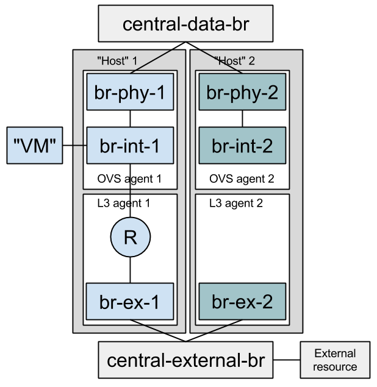

Setting Up a Development Environment¶
This page describes how to setup a working Python development environment that can be used in developing Neutron on Ubuntu, Fedora or Mac OS X. These instructions assume you’re already familiar with Git and Gerrit, which is a code repository mirror and code review toolset , however if you aren’t please see this Git tutorial for an introduction to using Git and this guide for a tutorial on using Gerrit and Git for code contribution to OpenStack projects.
Following these instructions will allow you to run the Neutron unit tests. If you want to be able to run Neutron in a full OpenStack environment, you can use the excellent DevStack project to do so. There is a wiki page that describes setting up Neutron using DevStack.
Testing Neutron¶
Why Should You Care¶
There’s two ways to approach testing:
- Write unit tests because they’re required to get your patch merged. This typically involves mock heavy tests that assert that your code is as written.
- Putting as much thought into your testing strategy as you do to the rest of your code. Use different layers of testing as appropriate to provide high quality coverage. Are you touching an agent? Test it against an actual system! Are you adding a new API? Test it for race conditions against a real database! Are you adding a new cross-cutting feature? Test that it does what it’s supposed to do when run on a real cloud!
Do you feel the need to verify your change manually? If so, the next few sections attempt to guide you through Neutron’s different test infrastructures to help you make intelligent decisions and best exploit Neutron’s test offerings.
Definitions¶
We will talk about three classes of tests: unit, functional and integration. Each respective category typically targets a larger scope of code. Other than that broad categorization, here are a few more characteristic:
- Unit tests - Should be able to run on your laptop, directly following a ‘git clone’ of the project. The underlying system must not be mutated, mocks can be used to achieve this. A unit test typically targets a function or class.
- Functional tests - Run against a pre-configured environment (tools/configure_for_func_testing.sh). Typically test a component such as an agent using no mocks.
- Integration tests - Run against a running cloud, often target the API level, but also ‘scenarios’ or ‘user stories’. You may find such tests under tests/tempest/api, tests/tempest/scenario, tests/fullstack, and in the Tempest and Rally projects.
Tests in the Neutron tree are typically organized by the testing infrastructure used, and not by the scope of the test. For example, many tests under the ‘unit’ directory invoke an API call and assert that the expected output was received. The scope of such a test is the entire Neutron server stack, and clearly not a specific function such as in a typical unit test.
Testing Frameworks¶
The different frameworks are listed below. The intent is to list the capabilities of each testing framework as to help the reader understand when should each tool be used. Remember that when adding code that touches many areas of Neutron, each area should be tested with the appropriate framework. Overlap between different test layers is often desirable and encouraged.
Unit Tests¶
Unit tests (neutron/tests/unit/) are meant to cover as much code as possible. They are designed to test the various pieces of the Neutron tree to make sure any new changes don’t break existing functionality. Unit tests have no requirements nor make changes to the system they are running on. They use an in-memory sqlite database to test DB interaction.
At the start of each test run:
- RPC listeners are mocked away.
- The fake Oslo messaging driver is used.
At the end of each test run:
- Mocks are automatically reverted.
- The in-memory database is cleared of content, but its schema is maintained.
- The global Oslo configuration object is reset.
The unit testing framework can be used to effectively test database interaction, for example, distributed routers allocate a MAC address for every host running an OVS agent. One of DVR’s DB mixins implements a method that lists all host MAC addresses. Its test looks like this:
def test_get_dvr_mac_address_list(self):
self._create_dvr_mac_entry('host_1', 'mac_1')
self._create_dvr_mac_entry('host_2', 'mac_2')
mac_list = self.mixin.get_dvr_mac_address_list(self.ctx)
self.assertEqual(2, len(mac_list))
It inserts two new host MAC address, invokes the method under test and asserts its output. The test has many things going for it:
- It targets the method under test correctly, not taking on a larger scope than is necessary.
- It does not use mocks to assert that methods were called, it simply invokes the method and asserts its output (In this case, that the list method returns two records).
This is allowed by the fact that the method was built to be testable - The method has clear input and output with no side effects.
You can get oslo.db to generate a file-based sqlite database by setting OS_TEST_DBAPI_ADMIN_CONNECTION to a file based URL as described in this mailing list post. This file will be created but (confusingly) won’t be the actual file used for the database. To find the actual file, set a break point in your test method and inspect self.engine.url.
$ OS_TEST_DBAPI_ADMIN_CONNECTION=sqlite:///sqlite.db .tox/py27/bin/python -m \
testtools.run neutron.tests.unit...
...
(Pdb) self.engine.url
sqlite:////tmp/iwbgvhbshp.db
Now, you can inspect this file using sqlite3.
$ sqlite3 /tmp/iwbgvhbshp.db
Functional Tests¶
Functional tests (neutron/tests/functional/) are intended to validate actual system interaction. Mocks should be used sparingly, if at all. Care should be taken to ensure that existing system resources are not modified and that resources created in tests are properly cleaned up both on test success and failure. Note that when run at the gate, the functional tests compile OVS from source. Check out neutron/tests/contrib/gate_hook.sh. Other jobs presently use OVS from packages.
Let’s examine the benefits of the functional testing framework. Neutron offers a library called ‘ip_lib’ that wraps around the ‘ip’ binary. One of its methods is called ‘device_exists’ which accepts a device name and a namespace and returns True if the device exists in the given namespace. It’s easy building a test that targets the method directly, and such a test would be considered a ‘unit’ test. However, what framework should such a test use? A test using the unit tests framework could not mutate state on the system, and so could not actually create a device and assert that it now exists. Such a test would look roughly like this:
- It would mock ‘execute’, a method that executes shell commands against the system to return an IP device named ‘foo’.
- It would then assert that when ‘device_exists’ is called with ‘foo’, it returns True, but when called with a different device name it returns False.
- It would most likely assert that ‘execute’ was called using something like: ‘ip link show foo’.
The value of such a test is arguable. Remember that new tests are not free, they need to be maintained. Code is often refactored, reimplemented and optimized.
- There are other ways to find out if a device exists (Such as by looking at ‘/sys/class/net’), and in such a case the test would have to be updated.
- Methods are mocked using their name. When methods are renamed, moved or removed, their mocks must be updated. This slows down development for avoidable reasons.
- Most importantly, the test does not assert the behavior of the method. It merely asserts that the code is as written.
When adding a functional test for ‘device_exists’, several framework level methods were added. These methods may now be used by other tests as well. One such method creates a virtual device in a namespace, and ensures that both the namespace and the device are cleaned up at the end of the test run regardless of success or failure using the ‘addCleanup’ method. The test generates details for a temporary device, asserts that a device by that name does not exist, create that device, asserts that it now exists, deletes it, and asserts that it no longer exists. Such a test avoids all three issues mentioned above if it were written using the unit testing framework.
Functional tests are also used to target larger scope, such as agents. Many good examples exist: See the OVS, L3 and DHCP agents functional tests. Such tests target a top level agent method and assert that the system interaction that was supposed to be perform was indeed performed. For example, to test the DHCP agent’s top level method that accepts network attributes and configures dnsmasq for that network, the test:
- Instantiates an instance of the DHCP agent class (But does not start its process).
- Calls its top level function with prepared data.
- Creates a temporary namespace and device, and calls ‘dhclient’ from that namespace.
- Assert that the device successfully obtained the expected IP address.
Fullstack Tests¶
Why?¶
The idea behind “fullstack” testing is to fill a gap between unit + functional tests and Tempest. Tempest tests are expensive to run, and target black box API tests exclusively. Tempest requires an OpenStack deployment to be run against, which can be difficult to configure and setup. Full stack testing addresses these issues by taking care of the deployment itself, according to the topology that the test requires. Developers further benefit from full stack testing as it can sufficiently simulate a real environment and provide a rapidly reproducible way to verify code while you’re still writing it.
How?¶
Full stack tests set up their own Neutron processes (Server & agents). They assume a working Rabbit and MySQL server before the run starts. Instructions on how to run fullstack tests on a VM are available below.
Each test defines its own topology (What and how many servers and agents should be running).
Since the test runs on the machine itself, full stack testing enables “white box” testing. This means that you can, for example, create a router through the API and then assert that a namespace was created for it.
Full stack tests run in the Neutron tree with Neutron resources alone. You may use the Neutron API (The Neutron server is set to NOAUTH so that Keystone is out of the picture). VMs may be simulated with a container-like class: neutron.tests.fullstack.resources.machine.FakeFullstackMachine. An example of its usage may be found at: neutron/tests/fullstack/test_connectivity.py.
Full stack testing can simulate multi node testing by starting an agent multiple times. Specifically, each node would have its own copy of the OVS/LinuxBridge/DHCP/L3 agents, all configured with the same “host” value. Each OVS agent is connected to its own pair of br-int/br-ex, and those bridges are then interconnected. For LinuxBridge agent each agent is started in its own namespace, called “host-<some_random_value>”. Such namespaces are connected with OVS “central” bridge to each other.
Segmentation at the database layer is guaranteed by creating a database per test. The messaging layer achieves segmentation by utilizing a RabbitMQ feature called ‘vhosts’. In short, just like a MySQL server serve multiple databases, so can a RabbitMQ server serve multiple messaging domains. Exchanges and queues in one ‘vhost’ are segmented from those in another ‘vhost’.
Please note that if the change you would like to test using fullstack tests involves a change to python-neutronclient as well as neutron, then you should make sure your fullstack tests are in a separate third change that depends on the python-neutronclient change using the ‘Depends-On’ tag in the commit message. You will need to wait for the next release of python-neutronclient, and a minimum version bump for python-neutronclient in the global requirements, before your fullstack tests will work in the gate. This is because tox uses the version of python-neutronclient listed in the upper-constraints.txt file in the openstack/requirements repository.
When?¶
- You’d like to test the interaction between Neutron components (Server and agents) and have already tested each component in isolation via unit or functional tests. You should have many unit tests, fewer tests to test a component and even fewer to test their interaction. Edge cases should not be tested with full stack testing.
- You’d like to increase coverage by testing features that require multi node testing such as l2pop, L3 HA and DVR.
- You’d like to test agent restarts. We’ve found bugs in the OVS, DHCP and L3 agents and haven’t found an effective way to test these scenarios. Full stack testing can help here as the full stack infrastructure can restart an agent during the test.
Example¶
Neutron offers a Quality of Service API, initially offering bandwidth capping at the port level. In the reference implementation, it does this by utilizing an OVS feature. neutron.tests.fullstack.test_qos.TestQoSWithOvsAgent.test_qos_policy_rule_lifecycle is a positive example of how the fullstack testing infrastructure should be used. It creates a network, subnet, QoS policy & rule and a port utilizing that policy. It then asserts that the expected bandwidth limitation is present on the OVS bridge connected to that port. The test is a true integration test, in the sense that it invokes the API and then asserts that Neutron interacted with the hypervisor appropriately.
API Tests¶
API tests (neutron/tests/tempest/api/) are intended to ensure the function and stability of the Neutron API. As much as possible, changes to this path should not be made at the same time as changes to the code to limit the potential for introducing backwards-incompatible changes, although the same patch that introduces a new API should include an API test.
Since API tests target a deployed Neutron daemon that is not test-managed, they should not depend on controlling the runtime configuration of the target daemon. API tests should be black-box - no assumptions should be made about implementation. Only the contract defined by Neutron’s REST API should be validated, and all interaction with the daemon should be via a REST client.
The neutron/tests/tempest/api directory was copied from the Tempest project around the Kilo timeframe. At the time, there was an overlap of tests between the Tempest and Neutron repositories. This overlap was then eliminated by carving out a subset of resources that belong to Tempest, with the rest in Neutron.
API tests that belong to Tempest deal with a subset of Neutron’s resources:
- Port
- Network
- Subnet
- Security Group
- Router
- Floating IP
These resources were chosen for their ubiquity. They are found in most Neutron deployments regardless of plugin, and are directly involved in the networking and security of an instance. Together, they form the bare minimum needed by Neutron.
This is excluding extensions to these resources (For example: Extra DHCP options to subnets, or snat_gateway mode to routers) that are not mandatory in the majority of cases.
Tests for other resources should be contributed to the Neutron repository. Scenario tests should be similarly split up between Tempest and Neutron according to the API they’re targeting.
Scenario Tests¶
Scenario tests (neutron/tests/tempest/scenario), like API tests, use the Tempest test infrastructure and have the same requirements. Guidelines for writing a good scenario test may be found at the Tempest developer guide: http://docs.openstack.org/developer/tempest/field_guide/scenario.html
Scenario tests, like API tests, are split between the Tempest and Neutron repositories according to the Neutron API the test is targeting.
Rally Tests¶
Rally tests (rally-jobs/plugins) use the rally infrastructure to exercise a neutron deployment. Guidelines for writing a good rally test can be found in the rally plugin documentation. There are also some examples in tree; the process for adding rally plugins to neutron requires three steps: 1) write a plugin and place it under rally-jobs/plugins/. This is your rally scenario; 2) (optional) add a setup file under rally-jobs/extra/. This is any devstack configuration required to make sure your environment can successfully process your scenario requests; 3) edit neutron-neutron.yaml. This is your scenario ‘contract’ or SLA.
Development Process¶
It is expected that any new changes that are proposed for merge come with tests for that feature or code area. Any bugs fixes that are submitted must also have tests to prove that they stay fixed! In addition, before proposing for merge, all of the current tests should be passing.
Structure of the Unit Test Tree¶
The structure of the unit test tree should match the structure of the code tree, e.g.
- target module: neutron.agent.utils
- test module: neutron.tests.unit.agent.test_utils
Unit test modules should have the same path under neutron/tests/unit/ as the module they target has under neutron/, and their name should be the name of the target module prefixed by test_. This requirement is intended to make it easier for developers to find the unit tests for a given module.
Similarly, when a test module targets a package, that module’s name should be the name of the package prefixed by test_ with the same path as when a test targets a module, e.g.
- target package: neutron.ipam
- test module: neutron.tests.unit.test_ipam
The following command can be used to validate whether the unit test tree is structured according to the above requirements:
./tools/check_unit_test_structure.sh
Where appropriate, exceptions can be added to the above script. If code is not part of the Neutron namespace, for example, it’s probably reasonable to exclude their unit tests from the check.
Note
At no time should the production code import anything from testing subtree (neutron.tests). There are distributions that split out neutron.tests modules in a separate package that is not installed by default, making any code that relies on presence of the modules to fail. For example, RDO is one of those distributions.
Running Tests¶
Before submitting a patch for review you should always ensure all tests pass; a tox run is triggered by the jenkins gate executed on gerrit for each patch pushed for review.
Neutron, like other OpenStack projects, uses tox for managing the virtual environments for running test cases. It uses Testr for managing the running of the test cases.
Tox handles the creation of a series of virtualenvs that target specific versions of Python.
Testr handles the parallel execution of series of test cases as well as the tracking of long-running tests and other things.
For more information on the standard Tox-based test infrastructure used by OpenStack and how to do some common test/debugging procedures with Testr, see this wiki page:
PEP8 and Unit Tests¶
Running pep8 and unit tests is as easy as executing this in the root directory of the Neutron source code:
tox
To run only pep8:
tox -e pep8
Since pep8 includes running pylint on all files, it can take quite some time to run. To restrict the pylint check to only the files altered by the latest patch changes:
tox -e pep8 HEAD~1
To run only the unit tests:
tox -e py27
Functional Tests¶
To run functional tests that do not require sudo privileges or specific-system dependencies:
tox -e functional
To run all the functional tests, including those requiring sudo privileges and system-specific dependencies, the procedure defined by tools/configure_for_func_testing.sh should be followed.
IMPORTANT: configure_for_func_testing.sh relies on DevStack to perform extensive modification to the underlying host. Execution of the script requires sudo privileges and it is recommended that the following commands be invoked only on a clean and disposeable VM. A VM that has had DevStack previously installed on it is also fine.
git clone https://git.openstack.org/openstack-dev/devstack ../devstack
./tools/configure_for_func_testing.sh ../devstack -i
tox -e dsvm-functional
The ‘-i’ option is optional and instructs the script to use DevStack to install and configure all of Neutron’s package dependencies. It is not necessary to provide this option if DevStack has already been used to deploy Neutron to the target host.
Fullstack Tests¶
To run all the full-stack tests, you may use:
tox -e dsvm-fullstack
Since full-stack tests often require the same resources and dependencies as the functional tests, using the configuration script tools/configure_for_func_testing.sh is advised (As described above). When running full-stack tests on a clean VM for the first time, we advise to run ./stack.sh successfully to make sure all Neutron’s dependencies are met. Full-stack based Neutron daemons produce logs to a sub-folder in /opt/stack/logs/dsvm-fullstack-logs (for example, a test named “test_example” will produce logs to /opt/stack/logs/dsvm-fullstack-logs/test_example/), so that will be a good place to look if your test is failing. Logging from the test infrastructure itself is placed in: /opt/stack/logs/dsvm-fullstack-logs/test_example.log. Fullstack test suite assumes 240.0.0.0/4 (Class E) range in root namespace of the test machine is available for its usage.
API & Scenario Tests¶
To run the api or scenario tests, deploy Tempest and Neutron with DevStack and then run the following command, from the tempest directory:
tox -e all-plugin
If you want to limit the amount of tests that you would like to run, you can do, for instance:
export DEVSTACK_GATE_TEMPEST_REGEX="<you-regex>" # e.g. "neutron"
tox -e all-plugin $DEVSTACK_GATE_TEMPEST_REGEX
Running Individual Tests¶
For running individual test modules, cases or tests, you just need to pass the dot-separated path you want as an argument to it.
For example, the following would run only a single test or test case:
$ tox -e py27 neutron.tests.unit.test_manager
$ tox -e py27 neutron.tests.unit.test_manager.NeutronManagerTestCase
$ tox -e py27 neutron.tests.unit.test_manager.NeutronManagerTestCase.test_service_plugin_is_loaded
- If you want to pass other arguments to ostestr, you can do the following::
- $ tox -e -epy27 – –regex neutron.tests.unit.test_manager –serial
Coverage¶
Neutron has a fast growing code base and there are plenty of areas that need better coverage.
To get a grasp of the areas where tests are needed, you can check current unit tests coverage by running:
$ tox -ecover
Since the coverage command can only show unit test coverage, a coverage document is maintained that shows test coverage per area of code in: doc/source/devref/testing_coverage.rst. You could also rely on Zuul logs, that are generated post-merge (not every project builds coverage results). To access them, do the following:
- Check out the latest merge commit
- Go to: http://logs.openstack.org/<first-2-digits-of-sha1>/<sha1>/post/neutron-coverage/.
- Spec is a work in progress to provide a better landing page.
Debugging¶
By default, calls to pdb.set_trace() will be ignored when tests are run. For pdb statements to work, invoke tox as follows:
$ tox -e venv -- python -m testtools.run [test module path]
Tox-created virtual environments (venv’s) can also be activated after a tox run and reused for debugging:
$ tox -e venv
$ . .tox/venv/bin/activate
$ python -m testtools.run [test module path]
Tox packages and installs the Neutron source tree in a given venv on every invocation, but if modifications need to be made between invocation (e.g. adding more pdb statements), it is recommended that the source tree be installed in the venv in editable mode:
# run this only after activating the venv
$ pip install --editable .
Editable mode ensures that changes made to the source tree are automatically reflected in the venv, and that such changes are not overwritten during the next tox run.
Post-mortem Debugging¶
TBD: how to do this with tox.
References¶
| [1] | PUDB debugger: https://pypi.python.org/pypi/pudb |